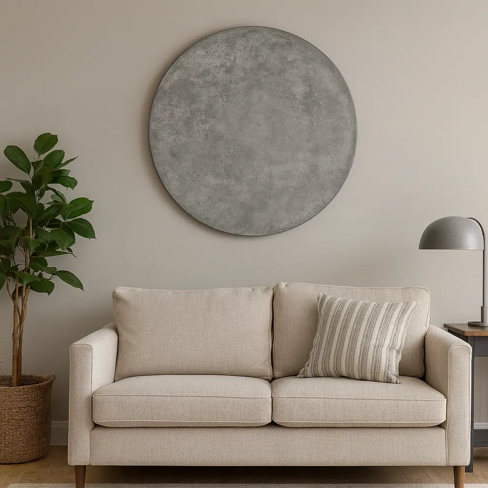
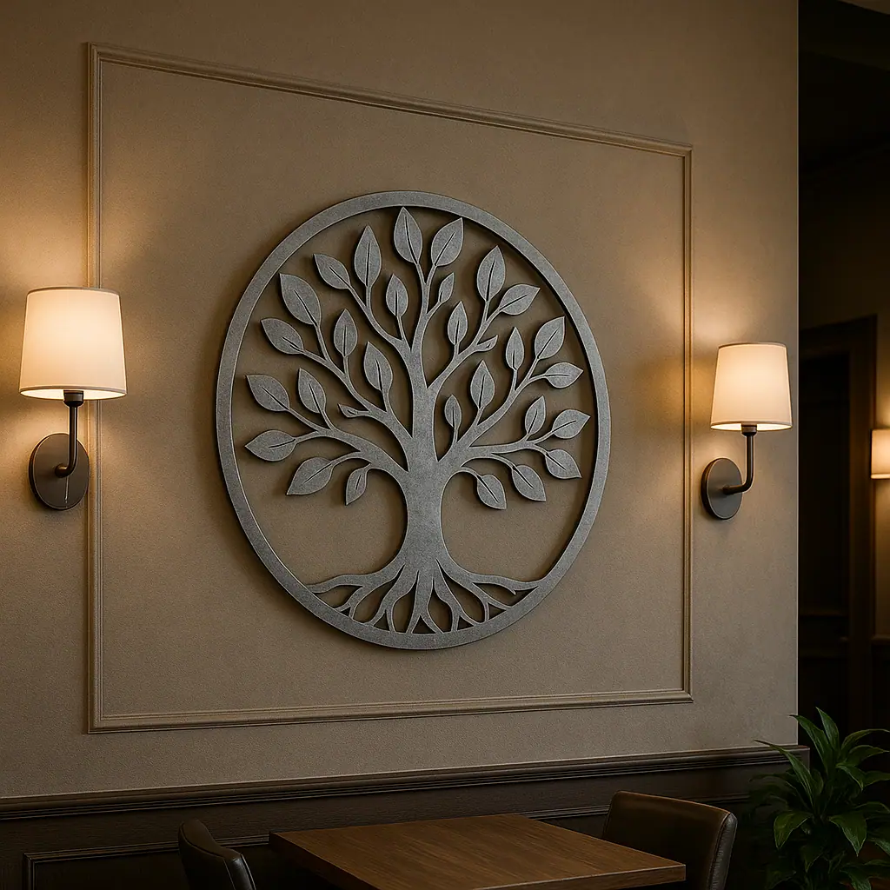

Zinc wall art from Halman Thompson is designed to make a statement. Ideal for both domestic and commercial spaces, our bespoke zinc artwork is durable and weather-resistant, transforming any interior or exterior wall into an eye-catching feature. Whether it’s for the home, garden, or business setting, our zinc wall art brings lasting durability and personality to any space.
Each unique metal wall art piece is handmade to order using premium zinc sheets , with various zinc finishes to offer a timeless, contemporary look that suits a wide range of environments… Perfect for adding natural charm and visual appeal to restaurants, offices, reception areas, living rooms, hallways, bedrooms, outdoor courtyards, patios, gardens, and more.
Contact our team for a personalised quotation and we’ll take care of the rest!


Cut to size
At Halman Thompson, every piece of zinc wall art is created to your exact specifications. Each panel is laser cut with exceptional precision, allowing complex designs and custom shapes to be created while ensuring a perfect fit and seamless addition to your wall design. From small, intricate pieces to large statement installations, our artisans tailor the size, shape, and style to meet your design specifications and turn your creativity into a reality.
Whether you’re looking for a piece for your home’s interior decor, a bold focal point for your business exterior, or a specially personalised gift, we’ll create something that truly reflects your vision. Simply share your ideas with us, and we’ll bring them to life!
Ready to go
Your zinc wall art will arrive fully finished and ready for installation. Each item is handcrafted in our UK workshop by expert metalworkers using high-quality zinc sheets. With our attention to detail and superior workmanship, you can expect a flawless result every time.
UK delivery is included within the price and our turnaround time is typically 5–6 weeks from order confirmation. Every piece of zinc wall art is prepared for quick and easy mounting, ensuring a hassle-free experience from order to display.
Request a free bespoke quote today .
Personalised Zinc Wall Art
Our custom zinc wall art reflects true individuality, combining your unique creative design with our skilled craftsmanship. Every zinc creation is made to order, giving you complete freedom to personalise the look and style of your zinc artwork.
Choose from natural zinc or hand-aged finishes to match your decor and desired patina, including our popular Lightly Aged Zinc and Antique Zinc . Each piece is then finished with a protective gloss or matte lacquer as standard, or you can opt for an unlacquered finish to allow the zinc to develop its own unique grey patina over time.
At Halman Thompson, we specialise in creating high-quality, one-of-a-kind zinc wall art that captures your imagination, from abstract designs to nature-inspired pieces. Popular choices include tree wall art, flower motifs, animal shapes, mosaic zinc tiles , large-scale geometric artwork for industrial environments, or aged metal finishes for rustic interiors. Whether you’re decorating a living room, office, restaurant, or garden, each piece creates a stunning focal point in your space.
With their sleek finish, dark-silver colour, and versatile art decoration potential, these zinc panels offer an elegant alternative to aluminium or stainless steel wall art. They’re ideal for those wanting a unique metal aesthetic that enhances both indoor and outdoor areas.
If you’re looking to fill a larger wall space, why not explore our zinc wall panels or zinc cladding options for a seamless architectural statement?
Looking after your zinc wall art
Caring for your zinc wall art couldn’t be easier. Simply wipe it occasionally with a soft cloth and mild soapy water to keep its decor looking pristine, and avoid using harsh abrasives or chemical cleaning products. With minimal maintenance requirements, each piece of zinc art will maintain its stunning aesthetic for many years. Full care instructions are included with every order, so you’ll know exactly how to care for your new artwork.
Buy zinc wall art from Halman Thompson
Ready to buy zinc wall art that’s both attractive and built to last? Halman Thompson is here to create the perfect piece for your space. We regularly work with commissions for one-off pieces and self-designed installations, and our team can laser cut zinc sheets to any shape or size to deliver something truly unique.
Our artisans can create bespoke metal wall art items in a variety of styles to showcase your personality or brand. Whether you want something characterful for your home, bold for your business, or an ideal gift for a special occasion, we’ll produce a customised piece of wall art that’s truly one of a kind.
Request a free, no-obligation zinc wall art quotation or contact our team to discuss your design ideas.
For a coordinated look, why not pair your zinc wall art with matching zinc table tops or zinc splashbacks for a unified wall art decor theme throughout your space?


If you can dream it, we’ll make it.
Bars, balustrades, staircases, worktops, cladding and pieces that don’t have a name yet. Our designers and craftspeople work in brass, copper, zinc and steel, and alongside wood.